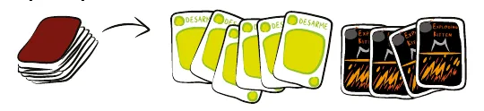
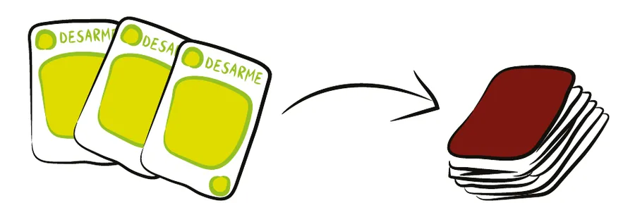
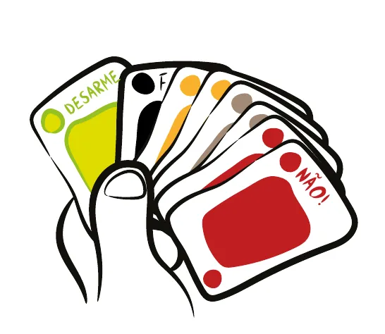
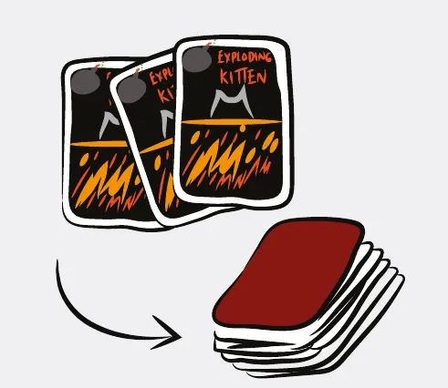
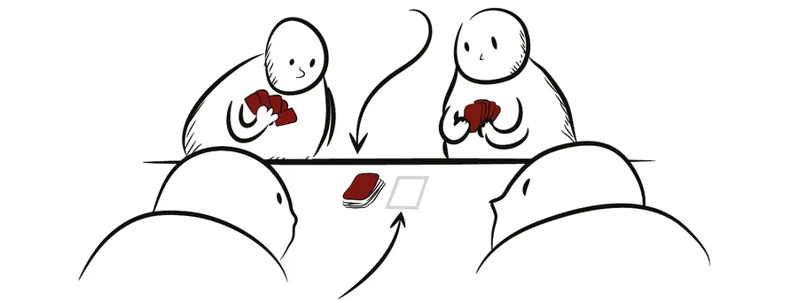
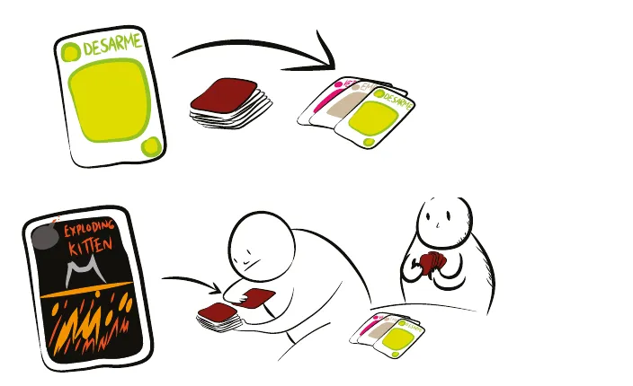
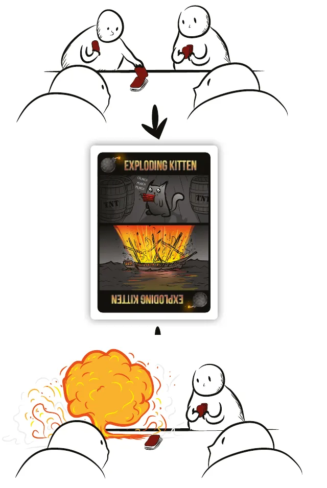
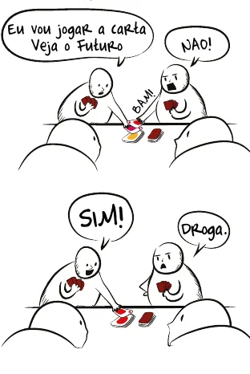
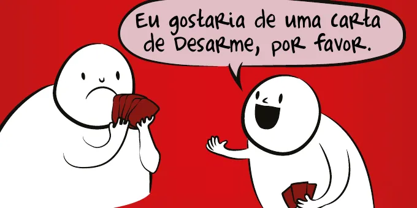

Para quem nunca jogou2 a 5 jogadores15 min7+Edição Galápagos (Asmodee)
· Redação Elite Boardgamers
Resumo em 1 minuto
Você joga cartas de ação se quiser e termina cada turno comprando uma carta; quem compra um Exploding Kitten sem Carta de Desarme explode, e vence o último que sobrar.
Na sua vez, jogue quantas cartas quiser ou passe, e termine comprando a carta do topo da Pilha de Compra.
Comprou um Exploding Kitten: com Desarme, você o devolve em segredo onde quiser na pilha; sem Desarme, está fora.
Pulo e Ataque encerram o turno sem compra, Veja o Futuro mostra as 3 cartas do topo e o Não! cancela qualquer ação, menos gatinho e Desarme.
Como você aprende: 3 etapas, da mesa montada à contagem de pontosLeitura do essencial: cerca de 7 min
À vista, só o essencial para jogar. O que abre com + é explicação, exemplo, exercício ou regra de caso especial: abra quando precisar.
Montar a mesa passo a passo
Tudo o que a partida usa é o baralho de 56 cartas; não há tabuleiro nem peças. A montagem leva poucos minutos e segue os 7 passos da preparação do folheto, na mesma ordem p. 1. Reserve um espaço livre no centro da mesa.
O que vem na caixap. 1 e 2:
Carta
Quantidade
Exploding Kitten
4
Desarme
6
Não!
5
Veja o Futuro (3X)
5
Ataque (2X)
4
Pulo
4
Presente
4
Embaralhar
4
Cartas de Gato
20 (5 tipos com desenhos diferentes, 4 de cada)
Total
56, e o folheto de regras
Passo a passop. 1:
Separe os Exploding Kittens. Procure no baralho as 4 cartas pretas de Exploding Kitten e deixe-as de lado, por perto: elas só entram no passo 5.
Separe as Cartas de Desarme e entregue uma a cada jogador. Tire do baralho as 6 Cartas de Desarme e dê uma a cada um. Cada jogador põe a sua na mão.

Passos 1 e 2: do baralho saem os 4 Exploding Kittens e as 6 Cartas de Desarme. Ilustração: manual Galápagos p. 1
Devolva ao baralho os Desarmes que sobraram. Com 4 ou 5 jogadores, devolva todos os que sobraram (2 ou 1). Com 2 ou 3 jogadores, devolva só 2; os demais saem da partida e voltam para a caixa (p. 1, quadro "Dois ou três jogadores").

Passo 3: as Cartas de Desarme que sobraram voltam para o baralho. Ilustração: manual Galápagos p. 1
Embaralhe e distribua 7 cartas a cada jogador, viradas para baixo. Com o Desarme do passo 2, cada um fica com 8 cartas na mão. Olhe as suas e não as mostre. Como os Desarmes extras voltaram ao baralho antes da distribuição, alguém pode receber um segundo.

Passo 4: a mão de 8 cartas, com a Carta de Desarme e as 7 recebidas. Ilustração: manual Galápagos p. 1
Ponha os Exploding Kittens de volta no baralho, em número igual ao de jogadores menos 1: 1 com 2 jogadores, 2 com 3, 3 com 4, 4 com 5. Os que sobram saem da partida e voltam para a caixa. É isso que garante que todos explodam, menos um.

Passo 5, exemplo com 4 jogadores: 3 Exploding Kittens entram no baralho. Ilustração: manual Galápagos p. 1
Embaralhe e ponha o baralho no centro da mesa, virado para baixo. Essa é a Pilha de Compra. Deixe ao lado um espaço vazio para a Pilha de Descarte, onde as cartas jogadas ficam viradas para cima.

Passo 6: a Pilha de Compra no centro, virada para baixo, e o espaço vazio da Pilha de Descarte ao lado. Ilustração: manual Galápagos p. 1
Escolham quem começa. O folheto deixa o critério livre e dá exemplos de brincadeira, como o jogador mais jovem. O jogo segue no sentido horário: depois de você, joga quem está à sua esquerda.
O que muda com o número de jogadores (p. 1; contas do guia):
Jogadores
Desarmes nas mãos
Desarmes devolvidos ao baralho
Desarmes para a caixa
Exploding Kittens no baralho
Exploding Kittens para a caixa
Cartas na Pilha de Compra
2
2
2
2
1
3
35
3
3
2
1
2
2
29
4
4
2
0
3
1
23
5
5
1
0
4
0
16
O que volta para a caixa: só as cartas que o folheto manda remover da partida, ou seja, os Desarmes e os Exploding Kittens a mais da tabela p. 1. Todas as outras cartas ficam no jogo.
Antes de começar, confira:
Cada jogador tem 8 cartas na mão, entre elas pelo menos uma Carta de Desarme.
A Pilha de Compra está no centro, virada para baixo, com Exploding Kittens em número igual ao de jogadores menos 1.
Há espaço livre ao lado dela para a Pilha de Descarte.
Todos sabem quem começa e que a vez passa para a esquerda.
Partida de 3 jogadores. Depois da montagem, quantas cartas estão na Pilha de Compra?
Sobram 46 cartas sem Exploding Kittens e Desarmes; voltam 2 Desarmes (48); saem 21 para as mãos (27); entram 2 Exploding Kittens: 29 p. 1.
Comece a jogar em 4 minutos
Imagem: Exploding Kittens
Meta: em 4 minutos de leitura, montar o baralho e jogar o seu primeiro turno sem abrir o folheto.
A ideia do jogo
No baralho há Exploding Kittens, gatinhos explosivos. Na sua vez, você joga cartas de ação se quiser e, no fim, compra uma carta da Pilha de Compra. Quem compra um Exploding Kitten explode e sai do jogo, a não ser que tenha uma Carta de Desarme. O último jogador que não explodiu vence p. 1.
Monte a mesa
A montagem completa, com figuras, está em "Montar a mesa passo a passo", logo acima. Os pontos principais p. 1:
Separe os 4 Exploding Kittens e as 6 Cartas de Desarme; dê 1 Desarme a cada jogador e devolva os outros ao baralho (com 2 ou 3 jogadores, só 2; os demais voltam para a caixa).
Embaralhe e dê 7 cartas a cada um (cada um fica com 8); depois ponha no baralho Exploding Kittens em número igual ao de jogadores menos 1 e devolva à caixa os que sobrarem.
Embaralhe, ponha a Pilha de Compra no centro e escolham quem começa. A vez passa para a esquerda.
Seu primeiro turno
Olhe as 8 cartas da sua mão e faça uma de duas coisas p. 1:
Jogue cartas: ponha uma carta virada para cima na Pilha de Descarte e faça o que ela diz. Depois, se quiser, jogue outra, quantas quiser.
Passe a Vez: não jogue nada.
Nos dois casos, termine o turno comprando a carta do topo da Pilha de Compra. A compra fecha o turno, e a vez passa ao jogador da esquerda p. 1.
Se a carta comprada for um Exploding Kitten, mostre-a na hora. Com uma Carta de Desarme, jogue-a na Pilha de Descarte e devolva o Exploding Kitten, em segredo, em qualquer lugar da Pilha de Compra, sem olhar nem reordenar as outras cartas. Sem Desarme, você está eliminado: descarte todas as suas cartas, inclusive o Exploding Kitten p. 2.
Duas cartas que você pode ter na mão já agora p. 2:
Carta
O que faz
Veja o Futuro (3X)
Olhe em segredo as 3 cartas do topo da Pilha de Compra e devolva-as na mesma ordem. O turno continua
Pulo
Termine o turno na hora, sem comprar
As outras cartas trazem o efeito escrito; a etapa 2 explica cada uma.
Ainda não precisa saber
Ataque, Presente, Embaralhar, Não! e os pares de Cartas de Gato: etapa 2. Combos Especiais e Ataques acumulados: etapa 3.
Como a partida acaba
Cada jogador que explode sai. Como há um Exploding Kitten a menos que o número de jogadores, a Pilha de Compra nunca acaba antes do fim: sobra um jogador, e ele vence p. 1.
Prefere ver? O folheto indica o vídeo oficial, em inglês, com legendas (CC) em português. Ele complementa este guia; em caso de diferença, vale o manual.
Exploding Kittens - How to Play, canal Exploding Kittens · abrir no YouTube
0Antes de tudo: o que é este jogoOpcional
Imagem: Exploding KittensAbrir esta seção
Exploding Kittens é um jogo de cartas de 2 a 5 jogadores: só o baralho de 56 cartas e o folheto. A regra de vitória, nas palavras dele: "se você explodir, você perde"; "se você não explodir, você vence" p. 1.
Comprar é obrigatório no fim do turno, e cada compra pode ser um Exploding Kitten. Quase todas as outras cartas mexem nessa compra: ver o que vem (Veja o Futuro), fugir dela (Pulo), empurrá-la para o vizinho (Ataque), mudar a ordem (Embaralhar), tomar cartas dos outros (Presente e os pares) e cancelar a jogada alheia (Não!). Só a Carta de Desarme salva quem já comprou o gatinho p. 1 e 2. Não há pontuação: os jogadores saem um a um, e vence quem sobrar.
1Como este guia ensinaOpcional
Imagem: Exploding KittensAbrir esta seção
São três etapas: montar e jogar turnos simples; as cartas de ação; Combos Especiais e Ataques em cadeia. Cada etapa traz Para entender (como funciona e por quê), Passo a passo (as regras de sempre), regras adicionais para casos menos frequentes e tarefas com ajuda decrescente: exemplo resolvido, tarefa para completar e sua vez. Escolha uma opção em cada pergunta para ver a certa e a explicação. No fim, uma avaliação diz o que reler, e a folha de consulta vai para a mesa.
2Etapa 1: montar o baralho e jogar turnos simples
Por que funciona assimOs primeiros passos da preparação: do baralho saem as 6 Cartas de Desarme e os 4 Exploding Kittens. Ilustração: manual Galápagos p. 1
Tamanho da Pilha de Compra no início, pelas contas da preparação:
Jogadores
Desarmes extras de volta
Exploding Kittens
Cartas na Pilha de Compra
2
2 (2 saem do jogo)
1
35
3
2 (1 sai do jogo)
2
29
4
2
3
23
5
1
4
16
A Pilha de Compra no centro da mesa, virada para baixo, com o espaço da Pilha de Descarte ao lado. Ilustração: manual Galápagos p. 1

A Carta de Desarme vai para a Pilha de Descarte; depois, o jogador devolve o Exploding Kitten à Pilha de Compra, escondendo de todos onde o põe. Ilustração: manual Galápagos p. 2Regra adicional: Onde pôr o gatinhoRegra adicional: Mão vazia ou cheiaRegra adicional: Quando jogar o Desarme

Como funciona: um jogador compra da Pilha de Compra, sai um Exploding Kitten, e ele explode. Ilustração: manual Galápagos p. 1Ver um exemplo resolvidoDica: Contar cartasPratique esta etapa: exercícios com respostas
3Etapa 2: as cartas de ação
Por que funciona assim

Um jogador anuncia Veja o Futuro e outro joga Não!; embaixo, um Não! jogado sobre esse Não! vira um Sim!, e a carta volta a valer. Ilustração: manual Galápagos p. 2Regra adicional: Pulo contra AtaqueRegra adicional: Desarme durante um AtaqueRegra adicional: Ataque canceladoVer um exemplo resolvidoPratique esta etapa: exercícios com respostas
4Etapa 3: Combos Especiais e Ataques em cadeia
Por que funciona assim

Três Cartas Iguais: o jogador pede uma Carta de Desarme pelo nome. Ilustração: manual Galápagos p. 2Sobre a edição: Como contar os turnosVer um exemplo resolvidoPratique esta etapa: exercícios com respostas
5Situações especiaisOpcional
Imagem: Exploding KittensAbrir esta seção
Partida de 2 ou 3. Só 2 Cartas de Desarme extras voltam ao baralho; as outras saem do jogo p. 1.
Regra adicional: Desarmes extras na mãoSobre a edição: Diferenças entre ediçõesSobre a edição: Pontos que o folheto deixa em aberto
6Avaliação finalOpcional
Imagem: Exploding KittensAbrir esta seção
Responda sem consultar. Cada resposta diz o que reler.
1. Em que ordem acontece o seu turno?
Jogue ou passe, e então compre; pode jogar quantas cartas quiser p. 1. Releia a etapa 1.
2. Partida de 4. Quantas Cartas de Desarme extras voltam ao baralho?
As 2 que sobram voltam; o limite só pesa com 2 ou 3 jogadores p. 1. Releia a etapa 1.
3. Carla compra um Exploding Kitten e joga Desarme. Davi joga Não! sobre o Desarme. O que acontece?
O Não! impede qualquer ação, exceto Exploding Kitten e Desarme p. 2. Releia a etapa 2.
4. Você joga Presente contra Bruno. Quem escolhe a carta?
Quem dá escolhe p. 2. Releia a etapa 2.
5. Você deve 2 turnos por um Ataque e, no primeiro, joga outro Ataque. Quantos turnos o próximo deve?
Os 2 que faltavam mais 2 p. 2. Releia a etapa 3.
6. Você joga três Cartas de Gato iguais. O que pode fazer?
Três Cartas Iguais: diga o nome; se ele tiver, você leva p. 2. Releia a etapa 3.
7Para consultar durante a partida
Imagem: Exploding Kittens
Preparaçãop. 1: separe 4 Exploding Kittens e 6 Desarmes; 1 Desarme para cada um; Desarmes restantes de volta ao baralho (com 2 ou 3 jogadores, só 2); 7 cartas para cada um; Exploding Kittens de volta, um a menos que os jogadores; embaralhe; Pilha de Compra no centro.
Seu turnop. 1: jogue quantas cartas quiser, ou passe; então compre a do topo. Sentido horário.
Exploding Kittenp. 2: mostre. Com Desarme: descarte-o e devolva o gatinho em segredo onde quiser na Pilha de Compra; o turno acaba. Sem Desarme: descarte tudo e saia.
Carta
Qtd.
Efeito
Exploding Kitten
4
Mostre; sem Desarme, você sai (na partida: jogadores menos 1)
Desarme
6
Salva de um Exploding Kitten comprado
Não!
5
Cancela uma ação a qualquer momento antes de ela acontecer, mesmo fora da sua vez; não para gatinho nem Desarme. Não! sobre Não! = Sim!
Veja o Futuro (3X)
5
Olhe as 3 do topo, devolva na ordem; o turno segue
Ataque (2X)
4
Acaba o turno sem comprar; o próximo joga 2 turnos. Em cadeia: os turnos que faltavam, contando o atual, + 2
Pulo
4
Acaba o turno sem comprar; contra Ataque, encerra 1 dos turnos
Presente
4
Outro jogador lhe dá 1 carta, à escolha dele
Embaralhar
4
Embaralhe a Pilha de Compra
Cartas de Gato
4 de cada (5 tipos, 20)
Par de mesmo nome: roube 1 carta aleatória, sem ver, de outro jogador
Total: 56 cartas p. 1 e 2.
Combos Especiaisp. 2: 2 cartas de mesmo nome, roube uma carta aleatória, sem ver; 3 de mesmo nome, peça uma carta pelo nome. Ignore o texto das cartas. Também levam Não!.
Galápagos. Exploding Kittens: regras, tiragem anterior, código EKEK01 (PDF de 28/05/2019), mesma biblioteca. Só para as diferenças entre edições. Consultado em 04/11/2026.
Regras conferidas no folheto de regras da edição brasileira de Exploding Kittens, a Edição Original (Galápagos, código EXK401, versão v1.0, 2023, tradução de Juliana Gallo), baixado da biblioteca de downloads da Asmodee Brasil. O folheto tem duas faces: a p. 1 traz as regras, a p. 2 traz o Guia Prático das cartas e os Combos Especiais. As poucas diferenças em relação à tiragem anterior e ao manual em inglês estão nas Situações especiais.